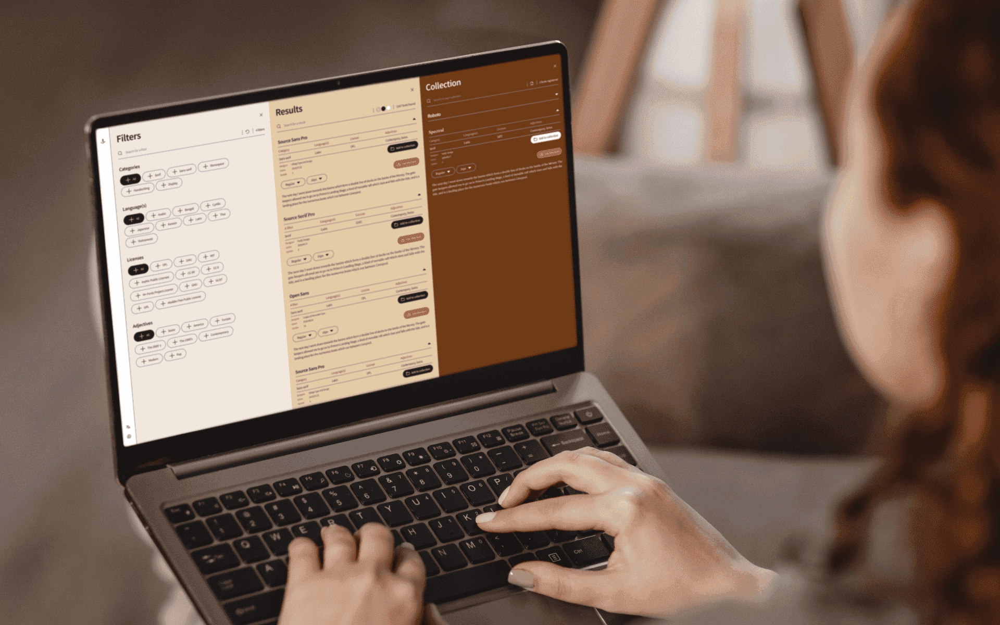
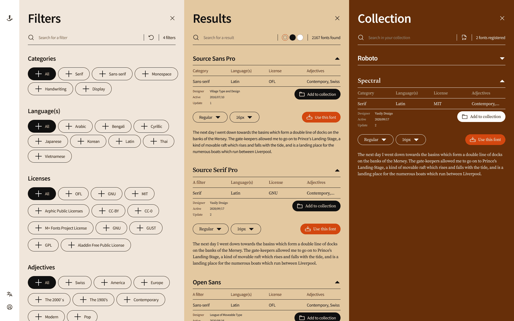
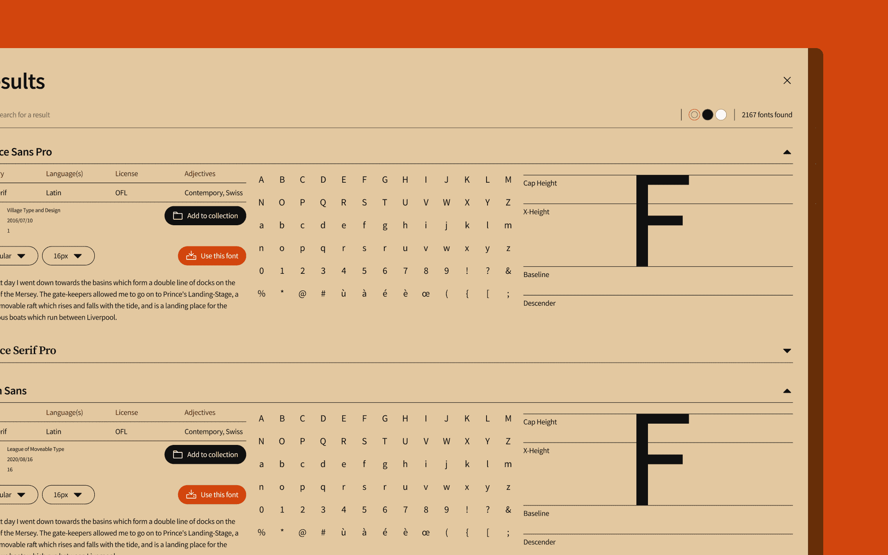
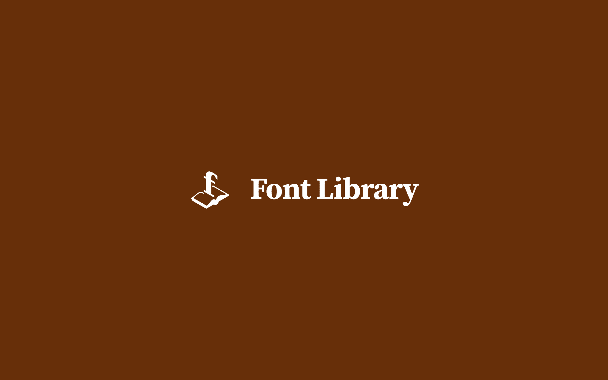

3. Font Library
Refonte de l’UX/UI du site web typographique libre
2022
Font Library ↗ est un site web dédié à l'hébergement de polices sous licence libre et à l'encouragement de leur développement collaboratif. En collaboration avec Clément Rénaud, créateur de Font Library, nous avons cherché à valoriser la diversité des styles typographiques de tout en offrant une expérience usager (UX) adéquate à l’identité graphique existante de Font Library (UI).
À travers les échanges effectuées avec Clément Rénaud et les usagers de Font Library, j’ai été amené à segmenter le parcours usager à travers trois principales caractéristiques de Font Library : le filtre, les résultats, la collection. Ainsi, sous la forme de colonnes séparées équitablement, l’usager peut fermer ces dernières afin d’agrandir le champ de vision de sa recherche typographique. Telles un livre, les animations « défilent » pour montrer que l’usager a la maîtrise de sa navigation.
À travers les échanges effectuées avec Clément Rénaud et les usagers de Font Library, j’ai été amené à segmenter le parcours usager à travers trois principales caractéristiques de Font Library : le filtre, les résultats, la collection. Ainsi, sous la forme de colonnes séparées équitablement, l’usager peut fermer ces dernières afin d’agrandir le champ de vision de sa recherche typographique. Telles un livre, les animations « défilent » pour montrer que l’usager a la maîtrise de sa navigation.
⤷ Conduite d’entretien, Figma
⤷ 1 semaine d’échange, 1 semaine d’étude et 1 semaine de conception
⤷ 2022
⤷ Prototype interactif ↗
⤷ 1 semaine d’échange, 1 semaine d’étude et 1 semaine de conception
⤷ 2022
⤷ Prototype interactif ↗


